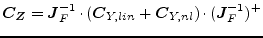
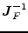
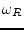

As the noise of linear and non-linear components are uncorrelated, the noise-voltage correlation matrix at the interconnecting ports can now be calculated:
|  | (8.5) |
here  is the inverse of the Jacobian matrix taken from the last HB iteration step (where it already was inverted). Note that it needs to be the precise Jacobian matrix. I.e. it must be taken from an iteration step very close to the solution, without any convergence helpers, and with a precise FFT algorithm (e.g. the multi-dimensional FFT).
Finally, the noise voltages from the interconnecting ports have to be used to compute all other noise voltages. This is straight forward:
The whole algorithm has to be performed for every noise frequency  of interest.